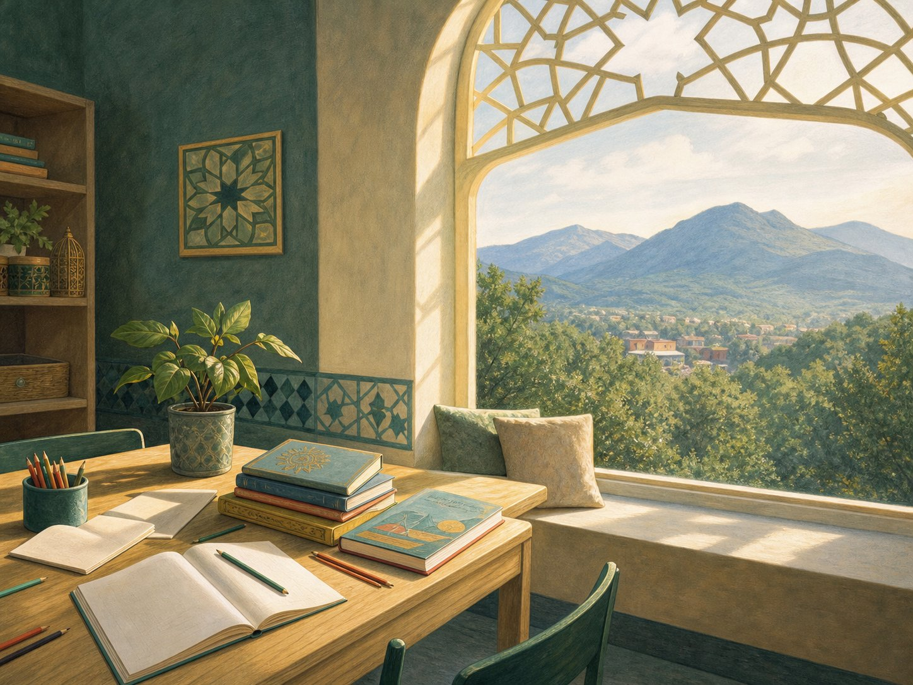
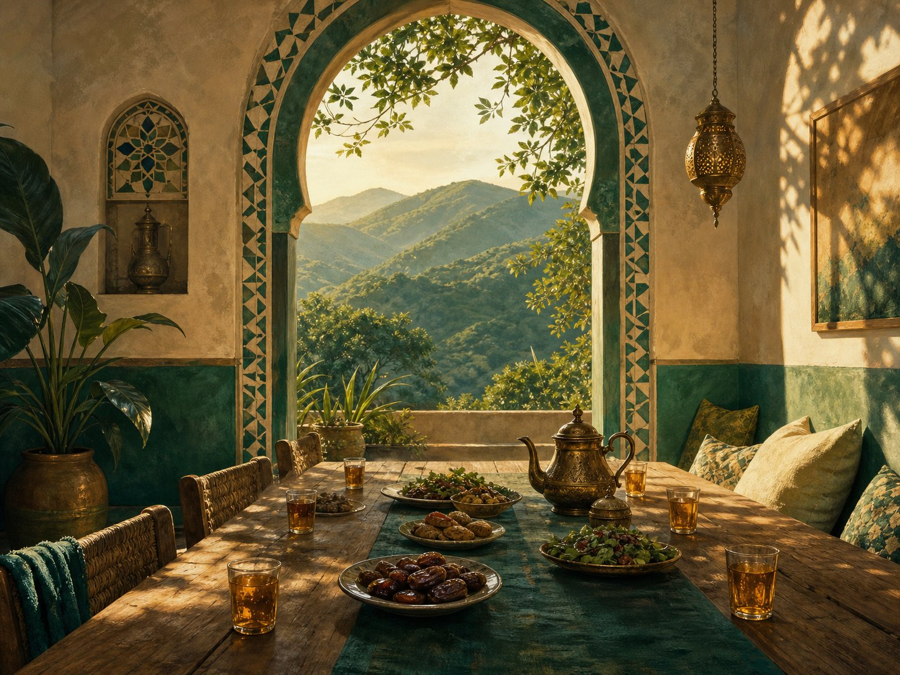

JAFFERY CENTERROANOKE, VIRGINIA
A placeto belong.
Faith, learning, and the joy of coming together. Everyone is welcome.
3031 Preston Avenue · Roanoke, Virginia 24012
A place to gather
A house of light.A home for community.
Jaffery Center is a welcoming Shia Muslim community in Roanoke, bringing people together through faith, learning, and family.
Explore the community guideGather in faith
Room to reflect
and reconnect.
Religious programs and meaningful occasions bring our community together throughout the year. Dates and details are shared as they are confirmed.
Explore programs
Illustrative scene · not a photograph of the center02 / LEARNINGLearn together
Knowledge
grows in company.
Explore Islamic learning, Qur’an study, and Sunday School in an encouraging setting for children and families.
Discover Sunday School
Illustrative scene · not a photograph of the centerFind your community
A welcome
with room for all.
Everyone is welcome — lifelong members, newcomers, and anyone seeking connection.
Read our storyCommunity notes
UPDATES / ROANOKE
No confirmed dates
to share here yet.
Program times and gatherings are announced as they are confirmed. Contact us for the latest details.
Ask about what’s comingReflect.
Grow.FAITH · QUR’AN · ARABIC
make a path.ASK US ABOUT REGISTRATION
For young learners
A thoughtful place
to begin.
Sunday School supports children as they explore faith, Qur’an, and Arabic with volunteer teachers.
Explore Sunday SchoolCome closer.
You’re welcome here.
Find the center at 3031 Preston Avenue. Reach out before you visit and we’ll help you find your way.
Plan a visit